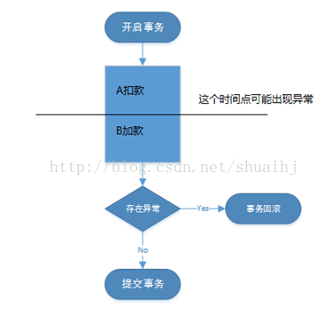

数据库ACID, 数据库锁，数据库索引，数据库安全性, 数据库完整性
数据库事务的ACID
原子性(Atomicity): 指事务是一个不可再分割的工作单位，事务中的操作要么都发生，要么都不发生。
- 案例: A转账给B 100 元
 - 分析: 在事务中的A扣款和B加款要么都执行成功,要么都不执行。
- 解决方案: 在数据库管理系统（DBMS）中，默认情况下一条SQL就是一个单独事务，事务是自动提交的。只有显式的使用start transaction开启一个事务，才能将一个代码块放在事务中执行。保障事务的原子性是数据库管理系统的责任，为此许多数据源采用日志机制。例如，SQL Server使用一个预写事务日志，在将数据提交到实际数据页面前，先写在事务日志上。mysql使用 undo log，是当事务回滚时能够撤销所有已经成功执行的 sql 语句。
- 案例: A转账给B 100 元
一致性(Consistency): 是指在事务开始之前和事务结束以后，数据库的完整性约束没有被破坏。这是说数据库事务不能破坏关系数据的完整性以及业务逻辑上的一致性。
- 案例: 数据库存在约束A和B的总金额为200
- 分析: 在执行转账任务结束后,也应遵守此约束。
- 解决方案:
保障事务的一致性，可以从以下两个层面入手
(1) 数据库机制层面
在一个事务执行之前和之后，数据会符合你设置的约束（唯一约束，外键约束,Check约束等)和触发器设置。mysql使用 redo log和Buffer Pool，Buffer Pool存储待写入数据库的数据，redo log记录事务的操作
(2) 业务层面
使用业务逻辑保证数据一致
隔离性(Isolation): 指多个事务并发访问时，事务之间是隔离的，一个事务不应该影响其它事务运行效果。
指的是在并发环境中，当不同的事务同时操纵相同的数据时，每个事务都有各自的完整数据空间。由并发事务所做的修改必须与任何其他并发事务所做的修改隔离。事务查看数据更新时，数据所处的状态要么是另一事务修改它之前的状态，要么是另一事务修改它之后的状态，事务不会查看到中间状态的数据。- 解决方案：利用加锁和阻塞来保证事务之间不同等级的隔离性。
持久性(Durability): 指事务完成以后，该事务所对数据库所作的更改便持久的保存在数据库之中，并不会被回滚。
解决方案: SQL SERVER通过对事务中对数据库的改变在写入到数据库之前，首先写入到事务日志中。而事务日志是按照顺序排号的（LSN）。当数据库崩溃或者服务器断点时，重启动SQL SERVER，SQLSERVER首先会检查日志顺序号，将本应对数据库做更改而未做的部分持久化到数据库，从而保证了持久性。
数据库锁
- 共享锁：又叫S锁或者读锁，加了共享锁的数据对象可以被其他事务读取，但不能修改， 通常是该数据对象被读取完毕，锁立即被释放
- 排他锁：又叫X锁或者写锁，当数据对象被加上排它锁时，一个事务必须得到锁才能对该数据对象进行访问，一直到事务结束锁才被释放。 在此之间其他的事务不能对它读取和修改
- 行锁: 行级别的锁
- 表锁: 表级别的锁
数据库的索引的数据结构
B+树
数据库安全性
权限控制和数据备份
数据库完整性
通过一些约定和规范来限制数据库的存储内容，比如主键、唯一键、非空等要求来限制字段的取值。